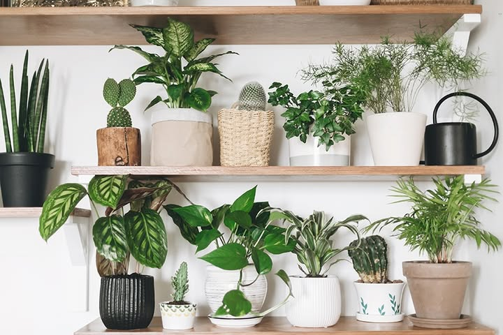
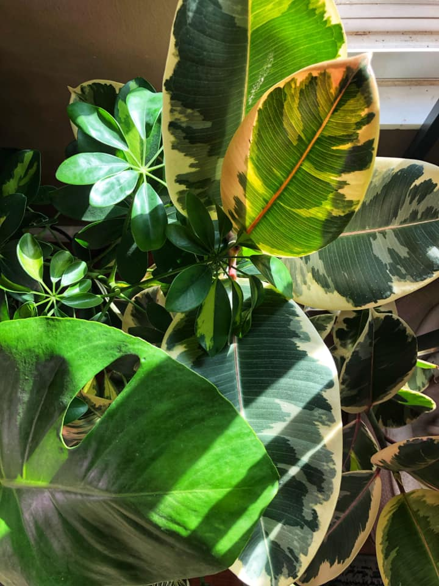
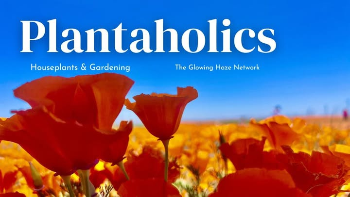

Getting Started
The Home Garden is to help encourage readers to learn more about house plants and even introduce them to a new type of plant to try out. Indoor plants add a pop of greenery into homes, but they also provide so much more. Indoor plants provide many health benefits like, reducing stress, improving focus, and purifying the indoor air.
Here we focus on three different plant groups:
- Succulents
- Tropicals
- Herbs
Get Connected
Join some Facebook groups! This can help you connect with your community of plant enthusiasts. Facebook groups are a good resource to get help with plant care, learn about different types of plants, and get more from people selling or trying to rehome them.

Help with House Plants

Cincinnati Plants Buy Sell Trade

Plantaholics